A newer feature in Cringe is support for generating Wang tiles of seamless noise. This library also provides some pre-made noise textures in the folder docs/noiseWang/. This page shows how they work.
There are two kinds of vertical seam between noise textures in a Wang tiling, and two kinds of horizontal seam. Any edge with the same type of seam is compatible with the 8 textures that share that seam on the opposite edge. Here, we'll call the two types of seams "cyan" and "orange," with cyan horizontal seams different from cyan vertical ones and the same for orange. The index for a noise texture is written below that texture. All the examples here use Perlue noise, but Perlin and Value noise are also provided.
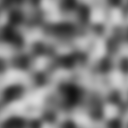 | 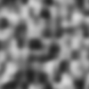 | 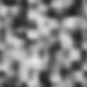 | 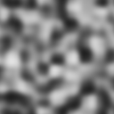 | ||||
| Noise 0 | Noise 1 | Noise 2 | Noise 3 | ||||
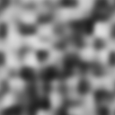 | 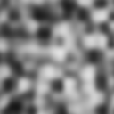 | 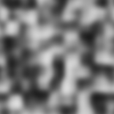 | 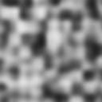 | ||||
| Noise 4 | Noise 5 | Noise 6 | Noise 7 | ||||
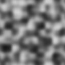 | 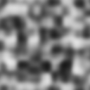 | 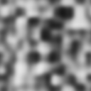 | 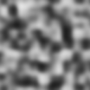 | ||||
| Noise 8 | Noise 9 | Noise 10 | Noise 11 | ||||
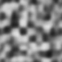 | 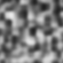 | 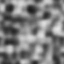 | 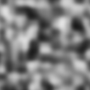 | ||||
| Noise 12 | Noise 13 | Noise 14 | Noise 15 |
Here are the above textures as one merged image, which can be split up into TextureRegions:
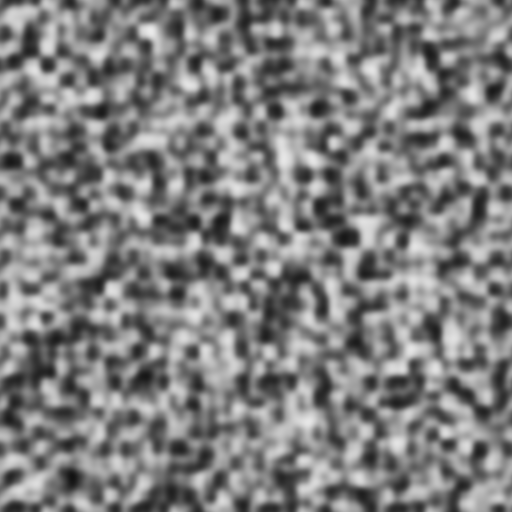
The images are provided with up to 3 octaves; here's FBM with 3 octaves, for a cloudy look:
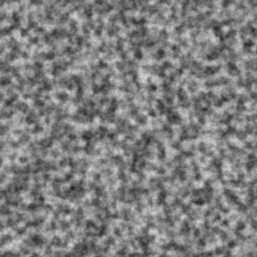
There are also 3 modes provided; FBM looks cloudy, Billow has dark lines, and Ridged has light lines.
Here's Billow with 2 octaves:
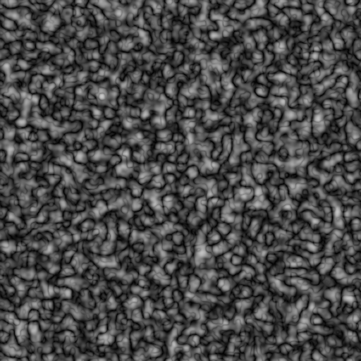
Here's Ridged with 1 octave:
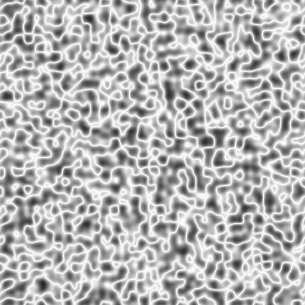
You can use the WangTiler class to get seeded pseudo-random indices for noise tiles, in the same order the indices are given here, for positions on a grid. Note that this expects the y-positions to be like they are here, with the lower y-positions at the top and higher y at the bottom (the order you would read a paragraph in). If you see seams between rows, try passing -y instead of y to WangTiler.select().